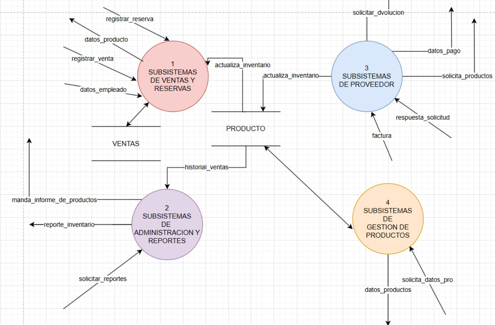

Sistema de Inventarios de juegos de Mesa
Gestión Inteligente de Juegos de Mesa
Una solución completa y moderna para el control, seguimiento y análisis de tu colección de juegos de mesa. Optimiza tu inventario con tecnología de vanguardia y análisis detallado.
Juegos de Mesa Populares en Inventario
Monopoly
El juego de bienes raíces más famoso del mundo. Compra, vende y negocia propiedades para dominar el mercado.
Clue (Cluedo)
Resuelve el asesinato descubriendo quién lo hizo, con qué arma y en qué habitación. Clásico juego de detectives.
Scrabble
Forma palabras cruzadas con fichas de letras y acumula la mayor puntuación. Desafía tu vocabulario.
Risk
Conquista el mundo en este épico juego de estrategia militar. Forma alianzas y domina territorios.
Jenga
Retira bloques de la torre sin que se derrumbe. Pulso firme y estrategia para ganar este clásico.
Pictionary
Dibuja y adivina en equipos. El juego perfecto para reírse y demostrar tus habilidades artísticas.
Ajedrez
El juego milenario de estrategia por excelencia. Planifica tus movimientos y captura al rey enemigo.
UNO
El juego de cartas más popular del mundo. Descarta todas tus cartas y grita "¡UNO!" antes que los demás.
Twister
Coloca manos y pies en los círculos de colores sin caerte. Diversión y risas aseguradas en cada partida.
Características Principales
Control Preciso
Mantén un registro detallado de cada juego en tu colección con información completa sobre disponibilidad, condición y ubicación exacta.
Análisis Avanzado
Genera reportes detallados y estadísticas en tiempo real para tomar decisiones informadas sobre tu inventario y optimizar tu colección.
Alertas Inteligentes
Recibe notificaciones automáticas sobre stock bajo, préstamos pendientes y recordatorios de mantenimiento de tus juegos.
Acceso Universal
Accede a tu inventario desde cualquier dispositivo, en cualquier lugar. Sincronización automática en la nube.
Seguridad Total
Protección de datos con encriptación de nivel empresarial y respaldos automáticos para mantener tu información segura.
Personalización
Adapta el sistema a tus necesidades específicas con campos personalizados, categorías y etiquetas configurables.
Marco Teórico
Introducción
En la actualidad, una gestión eficiente del inventario representa un factor determinante para el éxito operativo de cualquier empresa, o negocio dedicado a la comercialización de productos físicos. “MonsterDojo” es una tienda especializada en la venta de juegos de mesa, artículos de colección y productos relacionados con la cultura geek.
Debido a la creciente variedad de su catálogo y a la necesidad de atender tanto ventas presenciales como envíos a otras regiones, se ha identificado la necesidad de implementar un sistema informático que automatice y optimice el control del inventario.
Este proyecto tiene como propósito principal el análisis, diseño y propuesta de un sistema de inventario para la tienda “MonsterDojo”, que permita registrar productos, gestionar proveedores, controlar el stock disponible, registrar ventas y reservas, así como generar reportes gerenciales que respalden la toma de decisiones para el gerente de la tienda. El sistema está orientado a mejorar la eficiencia del personal operativo, facilitar las tareas del gerente y mantener un historial detallado de las transacciones realizadas, lo cual permite una supervisión efectiva del inventario y la actividad de ventas.
Para cumplir con estos objetivos, el desarrollo del sistema se basa en una metodología mixta que combina el Análisis Estructurado y el Análisis Orientado a Objetos. El enfoque estructurado permite definir con precisión los flujos de información y las interacciones entre los distintos actores. Por su parte, el paradigma orientado a objetos ofrece una estructura lógica más modular, reutilizable y escalable, a través de diagramas de clases y la identificación de entidades con sus respectivos atributos y comportamientos.
Antecedentes
La tienda “MonsterDojo” es una tienda especializada en la comercialización de juegos de mesa. Actualmente opera de forma presencial y también mediante envíos a distintos departamentos del país, lo cual requiere una gestión organizada del inventario y de los productos disponibles para su distribución. La variedad de artículos ofrecidos ha incrementado con el tiempo, lo que ha derivado en una mayor necesidad de control en el registro de productos y su procedencia.
Por medio de recolección de datos a través de entrevistas y reuniones con el gerente, se nos indicó que, cada producto que ingresa al inventario cuenta con un precio de adquisición, correspondiente al costo de compra asumido por la tienda, y un precio de venta, definido por el negocio. Además, se ha considerado la posibilidad de generar automáticamente un precio sugerido de venta, con base en el margen de ganancia deseado, como apoyo en la toma de decisiones comerciales.
La tienda mantiene relaciones con diversos proveedores, quienes abastecen el inventario de juegos de mesa. Un mismo proveedor puede ofrecer múltiples productos, los cuales deben registrarse junto con su precio de adquisición y la fecha en la que ingresan al inventario.
También el gerente nos explicó que el manejo de los procesos relacionados al registro de productos, ingreso de stock y gestión de proveedores se realizan manualmente mediante hojas de cálculo en Excel, lo que ha demostrado ser una solución limitada ante el aumento de productos, pedidos. Sin embargo, para el control de inventario, depende en gran medida de la memoria del propio gerente, quien recuerda qué productos hay disponibles y cuándo se agotan, lo que representa un riesgo significativo ante la falta de información actualizada.
Esta situación evidencia la necesidad de implementar un sistema informático que automatice dichas tareas, optimice la organización del inventario y centralice la información de productos y proveedores de manera eficiente, accesible y confiable.
Objetivos
- Diagnosticar la situación actual de la tienda en relación con el control de inventario, identificando las principales debilidades, riesgos y necesidades operativas.
- Modelar los procesos de negocio mediante herramientas de análisis estructurado y orientado a objetos, representando claramente los flujos de información y entidades clave.
- Gestión de stock e historial de movimientos de inventario.
- Administración de proveedores y compras.
- Registro de ventas y reservas.
Planteamiento del Problema
MonsterDojo, una tienda especializada en la venta de juegos de mesa, ha experimentado un notable crecimiento en su volumen de ventas y en la cantidad de productos que ofrece. Como consecuencia, la gestión manual del inventario se ha vuelto ineficiente y problemática. El control tradicional que realiza el dueño ya no es suficiente para manejar con precisión las entradas y salidas de productos, lo que genera errores, retrasos y una falta de visibilidad clara del stock disponible.
Esta situación afecta directamente a la logística del negocio, ya que dificulta la reposición oportuna de productos, la atención ágil a los clientes y la toma de decisiones estratégicas basadas en información actualizada. Además, el tiempo invertido en tareas manuales podría ser mejor aprovechado en otras áreas clave del negocio.
Por ello, MonsterDojo necesita incorporar un sistema digital que permita automatizar la gestión del inventario, facilitando el registro, seguimiento y control en tiempo real de los productos. Este sistema debe mejorar la eficiencia operativa, reducir los errores humanos y optimizar la experiencia tanto del propietario como de los clientes, asegurando un funcionamiento moderno y competitivo del negocio.
Árbol de Problemas

Formulación del Problema
¿Por qué la tienda de juegos de mesa "MonsterDojo" sigue gestionando su inventario de forma manual, sin un sistema digital ni herramientas para el seguimiento diario, lo que provoca falta de stock, sobrestock, pérdidas económicas y una atención ineficiente al cliente?
La tienda de juegos de mesa "MonsterDojo" presenta una desorganización en el control de inventario, debido principalmente a la ausencia de un sistema digital, el control manual del stock, el registro impreciso de entradas y salidas, y el alto crecimiento de la tienda sin un sistema adecuado de seguimiento. Esta situación genera consecuencias negativas como:
• Falta de stock en productos populares
• Sobrestock de productos con baja rotación
• Pérdida de ventas
• Pedidos innecesarios a proveedores
• Disminución de la confianza del cliente
• Reducción de ingresos para la tienda
Propósito del Estudio
Desarrollar un sistema informático integral para la tienda “MonsterDojo” que automatice y optimice la gestión de inventario, facilitando el registro de productos, control de stock, administración de proveedores, registro de ventas y reservas, así como la generación de reportes gerenciales para apoyar la toma de decisiones estratégicas.
Metodología
Método
La investigación sobre la situación actual de la tienda se enmarca en un enfoque cuantitativo y descriptivo, ya que se busca recolectar datos específicos sobre el manejo actual del inventario en la tienda GeekZone y analizar los procesos logísticos para proponer una solución digital eficaz. Este método permite identificar patrones, debilidades y oportunidades dentro del sistema actual mediante datos concretos obtenidos de los actores involucrados.
Medios
Para llevar a cabo la recolección de datos, se utilizarán los siguientes medios:
• Observación directa del proceso manual actual de control de inventario.
• Preguntas dirigidas al personal que participa en la gestión del stock.
• Entrevistas breves al dueño o responsable del negocio, para entender los problemas y necesidades concretas.
Instrumentos de investigación
Los instrumentos seleccionados para la recolección de datos son:
• Cuestionario estructurado con preguntas cerradas, dirigido al personal de la tienda, para obtener datos cuantificables sobre errores frecuentes, tiempo invertido en el manejo del stock, frecuencia de pérdidas, etc.
• Guía de observación para registrar de forma sistemática los pasos del proceso actual de registro de productos.
• Entrevista semiestructurada con el dueño de MonsterDojo para profundizar en sus percepciones y necesidades específicas respecto a la digitalización del negocio.
Justificación
La elección del método cuantitativo permite obtener datos objetivos y medibles sobre los errores y dificultades del sistema actual, mientras que la incorporación de herramientas cualitativas como la entrevista ayuda a complementar la visión con aspectos más subjetivos y contextuales. Esto permitirá desarrollar un sistema digital de inventario más ajustado a las verdaderas necesidades del negocio.
Alcances
Esta investigación se centrará exclusivamente en los procesos internos de control de inventario de la tienda MonsterDojo, ubicada en La Paz, Bolivia, durante el primer semestre de 2025. No se abordarán áreas como marketing, ventas o atención al cliente, excepto en lo que estas se relacionen directamente con la gestión del stock.
Modelo Ambiental
Declaración de Propósitos
Contenido de la declaración de propósitos del sistema de inventario de juegos de mesa MonsterDojo.
Diagrama de Contexto

Lista de Acontecimientos
- El empleado registra una venta
- El empleado registra una reserva
- El empleado consulta información de producto
- El gerente solicita reportes
- El gerente solicita stock
- El gerente consulta ingresos de productos
- El sistema envía al gerente un informe de productos
- El gerente registra o modifica productos
- El sistema solicita productos al proveedor
- El sistema solicita devolución de productos al proveedor
- El proveedor entrega productos al sistema
- El proveedor responde a una solicitud
- El proveedor envía una factura
- El sistema registra datos de pago al proveedor
- El sistema solicita datos de producto
- El sistema recibe datos de producto
Modelo de Comportamiento
Diagrama General del Sistema
Diagrama general del sistema
Niveles de DFD
Diccionario de Datos
Diagrama Entidad - Relación

Análisis Estructurado
Problemática
La tienda "MonsterDojo" especializada en juegos de mesa requiere un sistema de gestión de inventarios que automatice y optimice el control de su stock. Actualmente, la gestión manual mediante hojas de cálculo Excel y la dependencia de la memoria del gerente han generado ineficiencias, errores en el registro y falta de visibilidad en tiempo real del inventario disponible.
Modelos Utilizados para la Resolución del Problema
1. Modelo Ambiental
Concepto: El Modelo Ambiental define el entorno operativo del sistema, estableciendo sus límites e identificando todas las entidades externas con las que interactúa. Para MonsterDojo, este modelo nos permite comprender quiénes participan en el sistema y qué eventos desencadenan procesos.
2. Modelo de Comportamiento
Concepto: El Modelo de Comportamiento detalla la lógica interna del sistema, especificando cómo procesa datos, responde a eventos y transforma información. Para MonsterDojo, este modelo estructura los procesos de negocio en flujos de datos coherentes.
Orientado a Objetos
Diagrama de clases
Casos de Uso de Sistema
Casos de Uso de Negocio
Casos de Uso de Tipo Texto Expandido
Caso de Uso: Registrar Ingreso de Productos al Inventario
Registrar Ingreso de Productos al Inventario
Proceso de recepción y registro de nuevos productos
📋 Información General
🔗 Referencias
📝 Resumen
El encargado de almacén recibe productos físicos y los registra en el sistema de inventario. Se ingresan los datos del producto (nombre, código, cantidad, proveedor, fecha de ingreso, etc.). El sistema valida la información, actualiza el stock y guarda los registros.
⚠️ Cursos Alternos
- Línea 4: Si hay datos inválidos (ej. cantidad negativa, código duplicado), el sistema muestra un mensaje de error y no permite continuar.
- Línea 6: Si hay un error de conexión con la base de datos, se muestra un mensaje de falla y se recomienda intentar nuevamente.
🔄 Secuencia Normal de Eventos
7. Actualiza el stock del producto.
8. Genera un registro histórico del ingreso.
9. Muestra mensaje de éxito al usuario.
⚙️ Funciones del Sistema
📹 Videos Demostrativos
Aquí puedes ver demostraciones completas del sistema de inventarios de juegos de mesa desde diferentes perspectivas de análisis.
📊 Análisis Estructurado
Enfoque tradicional del análisis estructurado para el sistema de inventarios de juegos de mesa.
🎯 Orientado a Objetos
Enfoque de análisis orientado a objetos para el sistema de inventarios de juegos de mesa.
📋 Información sobre los videos
- Análisis Estructurado: Enfoque tradicional que descompone el sistema en procesos funcionales.
- Orientado a Objetos: Enfoque moderno que modela el sistema como objetos que interactúan.
- Ambos videos muestran el mismo sistema desde diferentes perspectivas metodológicas.
- Los videos están alojados en YouTube para fácil acceso y compatibilidad.
Contactos
¿Tienes preguntas o sugerencias? ¡Contáctanos!
contacto@gameinventory.com
Teléfono
+591 77586883
Sitio Web
www.gameinventory.com
Ubicación
La Paz, Bolivia